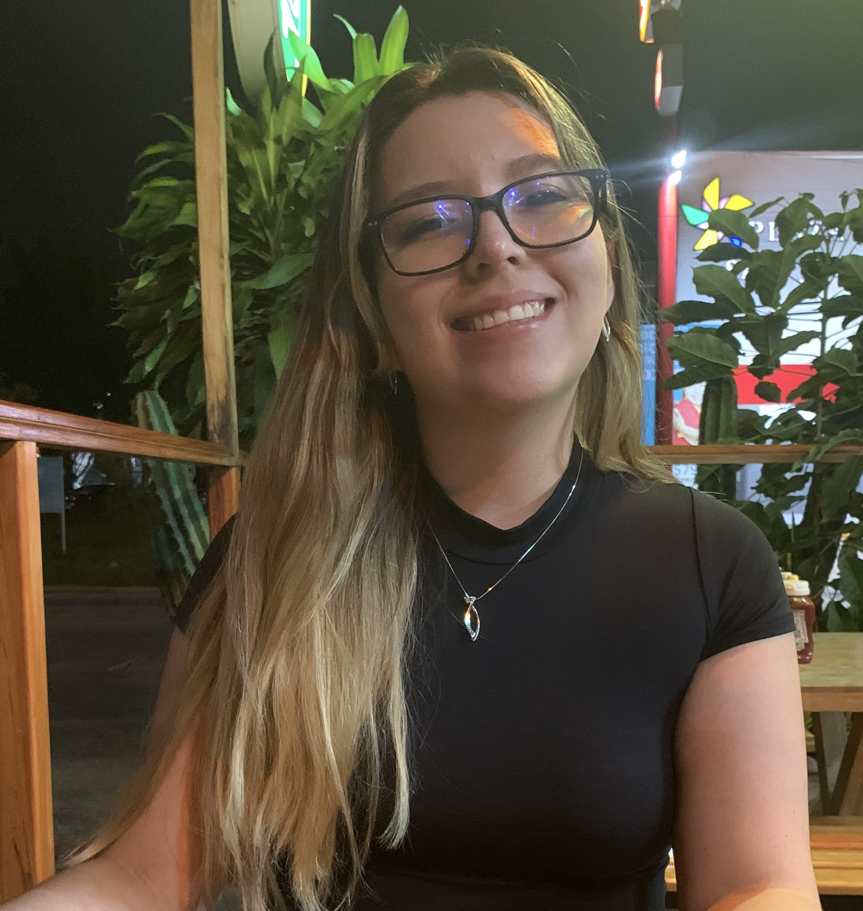

Andrea Daniela Tejeda Ocampo
Hi, I am Danny Tejeda, Robotics Engineer. I am passionate about bio-inspired design, ocean engineering and cognitive sciences. I love to explore the intersection between nature and technology.
I'm always open to connect with new people. You can reach out to me at: adanielatejedao[at]gmail.com